Probabilistic Structured Event Modeling
Video Event Recognition under Perceptual Uncertainty
Asian Conference on Computer Vision (ACCV) 2026* Equal contribution · † Corresponding author

Abstract
Long-duration video understanding systems summarize continuous observations as structured event representations to enable semantic retrieval. However, these events are produced by imperfect perceptual pipelines (e.g., detectors, trackers, and action classifiers), meaning that every extracted attribute carries inherent uncertainty. Existing retrieval frameworks often ignore this uncertainty, relying on deterministic hard matching that fails when a single cue is misrecognized, or on embedding-based retrieval methods that do not explicitly preserve structured event attributes, particularly spatial information. This paper models structured events as probabilistic entities in which the correctness of each perceptual attribute is treated as a latent variable. A marginal-likelihood retrieval formulation integrates attribute-level uncertainty, allowing reliable attributes to compensate for uncertain ones instead of discarding an event after a single erroneous observation. For the spatial axis, detection covariance is propagated through the homography Jacobian to estimate uncertainty on the ground plane.
Evaluated on an uncertainty-driven event retrieval benchmark using both the indoor CAVIAR and outdoor VIRAT datasets, the framework consistently outperforms deterministic hard matching under increasing attribute noise, reaching 3.3× higher Recall@5 (0.394 vs. 0.120) at the highest corruption level. Controlled ablations identify the per-event confidence as the operative signal precisely when perception is degraded, and delineate the boundary between robustness to attribute noise and failures caused by events missing from memory.
Reference
Nhan Thanh Ho, Anh Dong Nguyen, Thuan Duc Tran, Thang Van Nguyen, Bui Anh Thinh, Nguyen Bao Tran, and Long Nhat Ho. Probabilistic Structured Event Modeling for Video Event Recognition under Perceptual Uncertainty. In Proceedings of the Asian Conference on Computer Vision (ACCV) 2026.
BibTeX citation
@inproceedings{ho2026probabilistic,
title = {Probabilistic Structured Event Modeling for Video Event
Recognition under Perceptual Uncertainty},
author = {Ho, Nhan Thanh and Nguyen, Anh Dong and Tran, Thuan Duc and
Nguyen, Thang Van and {Bui Anh Thinh} and {Nguyen Bao Tran} and
Ho, Long Nhat},
booktitle = {Asian Conference on Computer Vision (ACCV)},
year = {2026}
}
Method
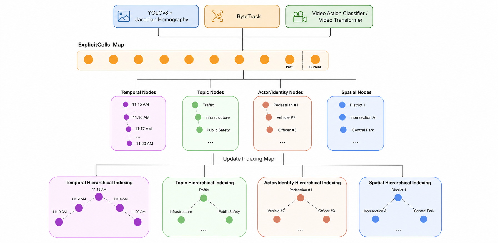
Results
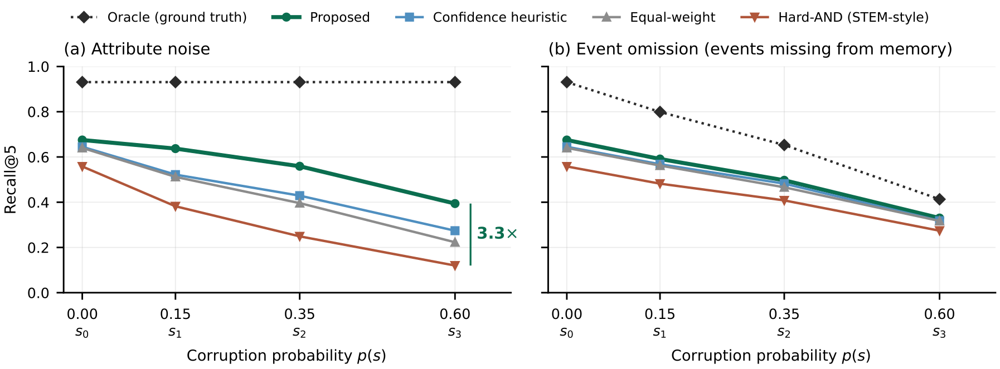
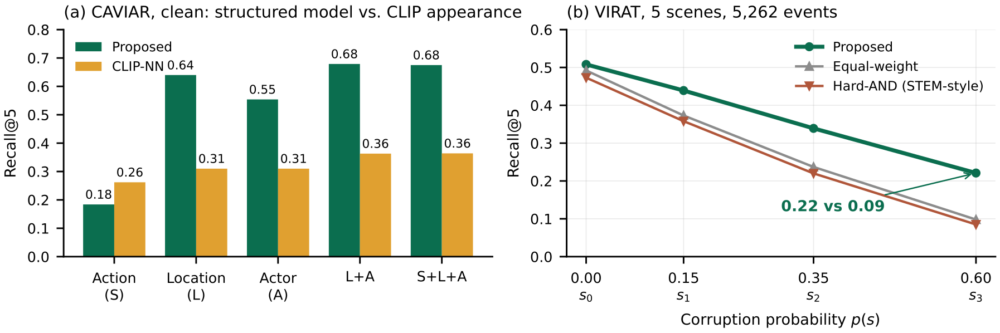
Qualitative example
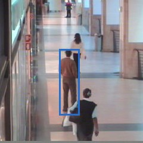
track 12) is
browse in zone g00. Memory holds 85 ExplicitCells of this clip,
7 of which are truly relevant. Stored attributes are corrupted with the paper's heaviest
noise level (s3, p = 0.6).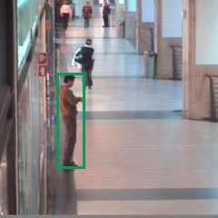
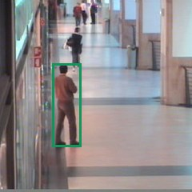
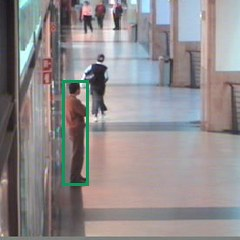

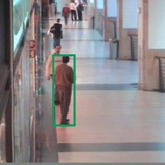
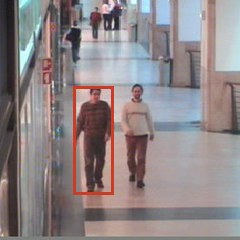
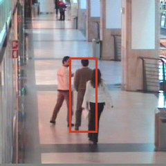
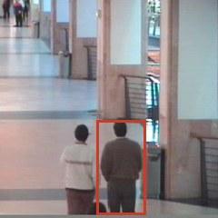
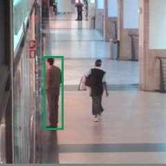
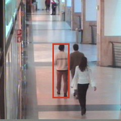
Figure 5: Top-5 retrieval for one real query, produced by our evaluation code on the paper's s3 protocol (seed 4). No stored event matches all three cues, so Hard-AND falls back to ranking by confidence and returns only one relevant event. Our model sees that each corrupted cue carries low confidence, lets the remaining reliable cues decide, and all of its top-5 events are relevant.